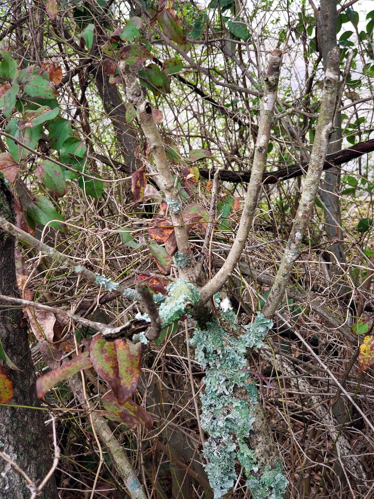

I like to take some pictures of nature around me, it doesn't have to be something awesome. Maybe it is an uguly subject but will have an impact on me or people how look at them. Here are some examples that I want to share.
The picture is of a small tree with some algie all over it.
Here are some examples of my pictures.